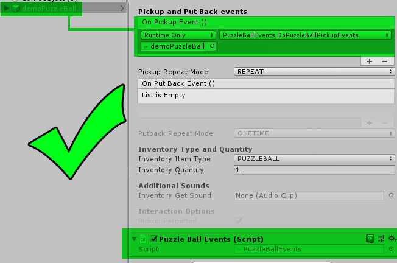
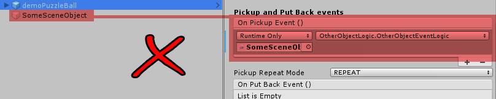

Many types of objects and interactions allow for the use of Unity Events, which can be assigned in the Inspector.
Pickups and Inventory Items allow for you to assign Unity Events for Pick Up and Put Back events. It is important to note that if your game will use the Save Game feature, and particulary, the quick save and quick load features or allow the player to move back and forth between scenes, your events must be self-contained with the prefab.
Self-Contained events are events whose logic resides on the associated prefab. For example, if you had an inventory item that needed to fire an event when picked up, the function that you assign in the event Inspector field needs to be in a script attached to that inventory item prefab. Otherwise, when the game is loaded, the assignment for the event will become broken.
Here, we have a GOOD example of a Puzzle Ball inventory item which has a helper script component on the prefab called PuzzleBallEvents. That script's function, DoPuzzleBallPickupEvents() is assigned in the Inspector for the Puzzle Ball's OnPickupEvent. This is the right design
Now here is a BAD example of a Puzzle Ball inventory item which has an assigned event that references an object in the scene called SomeSceneObject. The assigned event in the OnPickupEvent field is a function on the script component OtherObjectLogic, which is NOT on our Puzzle Ball prefab! This reference will break when the game is loaded from a saved game file, breaking the link to the event, causing the OnPickupEvent to fail. This is the wrong design.
